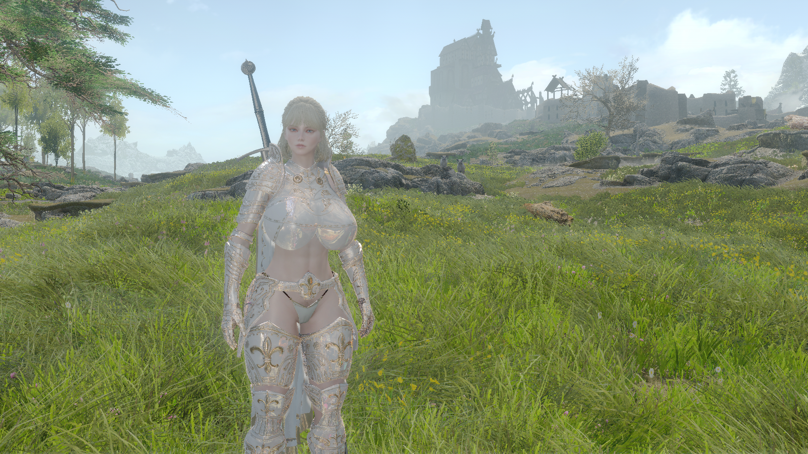

스카이림은 전작 엘더스크롤 4: 오블리비언의 시점에서 200년이 지난 4시대 201년, 스카이림에서 발생한 고대 드래곤의 부활과 여러 위협에 맞서 세상을 지키는 내용의 이야기이다. 이전 작품들은 황제를 중심으로 일어나는 국가적 사건을 바탕으로 하여 주인공이 제국과 밀접한 관계를 맺고 있었다 하지만 이번 작품의 주인공은 전작들과 비교하면 제국과는 연관성이 그다지 없고 심지어 제국에 반하는 행동을 취할 수도 있으며, 메인 스토리는 전작들과는 달리 주인공 개인의 선택에 초점이 맞추어져 있다 
주인공은 어떤 이유로 스카이림의 국경 을 넘는 도중, 제국에서 스카이림을 독립시키려는 반란군 스톰클록을 소탕하고 돌아오던 제국군에게 붙잡혀, 먼저 붙잡힌 말 도둑 로키르. 스톰클록의 수장 울프릭 스톰클록, 스톰클록 병사 랄로프와 함께 헬겐으로 이송되어 처형당할 위기에 처한다. 도끼가 주인공의 목을 내려치기 바로 직전, 스톰클록 병사 랄로프나 헬겐에 주둔 중이던 제국군 장교 헤드바 중 한명을 따라서 헬겐을 탈출하면서 본격적인 게임이 시작된다